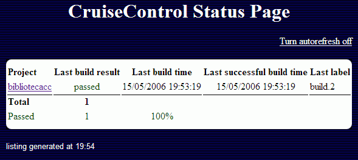
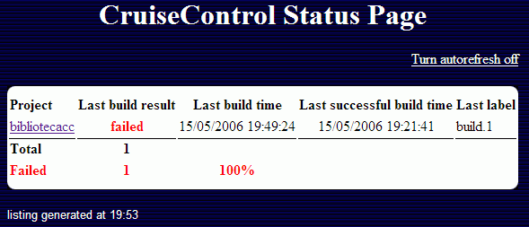

Prácticas Ágiles
Desarrollo Dirigido por las Pruebas & Integraciones Continuas
Una de las técnicas más básicas y que aportan mayor valor al desarrollo de proyectos es el uso de un proceso automático de construcción y pruebas que permita al equipo construir y probar su sistema muchas veces a lo largo de la jornada laboral.
Automatización
Durante el desarrollo de un proyecto, son innumerables las ocasiones en que tenemos la necesidad de construir el proyecto para comprobar si los cambios realizados son correctos, si las pruebas implementadas son efectivas, si el sistema sigue funcionando como lo hacia hasta ahora.
¿Por Qué Automatizar?
Por que el tiempo es oro. Los procesos automáticos son más rápidos que los manuales. Además, la automatización ofrece precisión, consistencia y repetición.
Cuando un ser humano realiza una tarea repetitiva acaba por aburrirse, pero el ordenador realiza estas tareas una vez tras otra sin quejarse ;)
El hecho de tener un proceso de construcción automático nos permite producir software al presionar un botón. Este proceso de construcción sigue las instrucciones de nuestra cuidada receta. Tomando los ingredientes como entrada, y tras unos ciclos de reloj, ya tenemos un poco de software listo para consumir. Este proceso nos va a permitir disponer de más tiempo para desarrollar software, que al fin y al cabo, es lo que más nos interesa.
Además, la automatización reduce la documentación, ya que no es necesario explicar al resto de componentes (o futuros compañeros) del equipo de trabajo los pasos a seguir para realizar un determinado proceso, sino que se le enseña donde esta el script y como se ejecuta (y si está interesado, el script estará documentado explicando todas las tareas que realiza).
Así pues, la automatización cambia el modo de trabajar, ya que no solo hace el trabajo más fácil, sino que permite ejecutar los procesos críticos del proyecto tantas veces como deseemos.
¿Cuando Automatizar?
Cuando ejecutes el mismo proceso por segunda vez, éste debería ser automático. Raro sería que no hubiera una tercera vez.
Los errores normalmente aparecen debido al aburrimiento, por lo tanto, si un proceso debe ser fiable y consistente, debe estar automatizado. Sólo una cosa a tener en cuenta, nunca emplees más tiempo desarrollando una solución automática que el tiempo que te ahorrarías.
¿Cuando Ejecutamos Procesos Automáticos?
Los diferentes tipos de automatización, respecto a su tipo de inicio, pueden ser:
- Comandos: cuando ejecutamos un comando y el ordenador realiza una serie de tareas de un modo consistente y repetible.
- Planificadas: una vez un comando automatiza un proceso, podemos incluirlo dentro de un sistema planificador, de modo que nadie tenga que ejecutar el comando de forma manual.
- Basada en Eventos: los comandos también se pueden ejecutar automáticamente cuando ocurre algún evento importante, por ejemplo, al subir un archivo al CVS.
¿Y qué necesitamos para automatizar?
- Control de Versiones (CVS, Subversion): Repositorio central con el código y documentación del proyecto, de modo que tenemos un único punto desde el cual construir el proyecto.
- Pruebas Automáticas (JUnit, Cactus): las pruebas que comprueban sus propios resultados incrementan la confianza del equipo en la aplicación.
- Scripts (Shell scripts, Ant, Maven): para enseñarle al ordenador cómo automatizar los procesos.
- Dispositivos de Comunicación (Email, Wiki, Teléfono móvil): la automatización también ofrece retroalimentación sobre los resultados de la construcción y las pruebas, pudiéndose realizar en múltiples y diversos dispositivos.
Desarrollo Dirigido por las Pruebas (TDD)
Los ingenieros del software, por lo general, han relacionado las pruebas con un mal necesario. Mientras todos los desarrolladores afirman la importancia que tienen las pruebas dentro de la producción de software de calidad, a casi nadie le hace gracia tener que probar su propio código, e incluso menos si lo tiene que hacer otra persona.
El Desarrollo Dirigido por las Pruebas, también conocido como Test Driven Development (TDD), es una de las técnicas ágiles más utilizadas, ya que protege al proyecto de los cambios mediante un escudo de pruebas unitarias.
XP ha cambiado la percepción que la comunidad tiene del proceso de pruebas, dando un nuevo aire al "arte de las pruebas". Para ello, plantea que la escritura y ejecución de las pruebas deben ser el elemento central de los esfuerzos de desarrollo.
Para la gran mayoría de desarrolladores, la realización de pruebas antes de XP era un proceso muy laborioso y pesado. Se debía escribir un caso de prueba, preparar los datos a probar, documentar los resultados esperados antes de que cualquier prueba pudiera ejecutarse. Para hacer el proceso de las pruebas más "comestible", XP aprovechó la automatización de los scripts para todas las pruebas relacionadas con el desarrollo. Mediante XP, los desarrolladores escriben código para probar código, y como todos sabemos, a los desarrolladores lo que nos gusta es escribir código y no documentos.
El enfoque XP para las pruebas difiere de los procesos tradicionales en que las pruebas se escriben antes de producir el código de la implementación. Una vez escrita la prueba, se debe escribir el menor y más simple trozo de código para pasar la prueba (ni más, ni menos). El escribir código que pasa la prueba hace que la prueba dirija el proceso de desarrollo, de ahí el término.
Así pues, la regla es 2x1 "probar dos veces, codificar una", mediante los 3 pasos:
- Escribir una prueba para el nuevo código y comprobar como falla
- Implementar el nuevo código, haciendo "la solución más simple que pueda funcionar"
- Comprobar que la prueba es exitosa, y refactorizar el código.
Este enfoque de TDD traslada el proceso de pruebas a la primera plana de la atención del ingeniero. El resultado de este énfasis en las pruebas es que las pruebas que validan la implementación cumplen los requisitos, y el código escrito, por consiguiente, pasa las pruebas.
TDD existía antes de XP. No obstante, XP popularizó la práctica y ayudó a su extendida aceptación.
El hecho de adoptar esta técnica no requiere que se utilice el proceso XP. Como ya hemos visto, XP adopta un conjunto de prácticas, de las cuales TDD es sólo una. De hecho, TDD es una de las más valiosas incorporaciones que se puede hacer a cualquier metodología (por ello este apartado), y se anima activamente a su uso como parte del Proceso Unificado de Rational (RUP).
Beneficios
Seguir un enfoque de TDD permite la producción de un conjunto compresible de pruebas automáticas a lo largo del proyecto, las cuales se puede ejecutar de forma rápida y fácil. Al incluir las pruebas en el proceso de construcción, el impacto de un cambio en el código de la aplicación se puede evaluar inmediatamente. El coste de identificar errores de implementación durante la fase de construcción es menor que descubrirlos a posteriori mediante un proceso separado realizado por un equipo de control de calidad.
De forma breve, los beneficios que puede ofrecer TDD son:
- Los requisitos de las pruebas se consideran al principio.
- No se omiten las pruebas, ya que se escriben primero.
- El acto de escribir las pruebas sirve para aclarar los requisitos.
- Escribir código de pruebas tiende a producir software mejor organizado.
- Se mejora la usabilidad de los interfaces ya que los desarrolladores se ven obligados a trabajar con el interfaz a probar.
- Validación de los cambios sobre el código de forma inmediata, formando parte del proceso de construcción.
- Ofrece soporte a la refactorización.
- Se entrega un producto de mayor calidad al equipo de control de calidad, ya que las pruebas unitarias han eliminado gran parte de los defectos.
- Se incrementa la confianza de los desarrolladores sobre la estabilidad de la aplicación.
Por todo esto, TDD ofrece al proyecto la agilidad necesaria para incorporar los cambios dentro de su estructura. Se pueden realizar cambios de forma rápida y precisa. Además, el tener un conjunto comprensivo de pruebas permite la refactorización de un modo seguro. De este modo, los ingenieros pueden realizar cambios en el código, de una forma segura, ya que cualquier error introducido en él se detectará automáticamente.
Costes
Un enfoque de TDD puede incrementar de forma significativa la calidad del software entregado. No obstante, mientras la teoría de TDD es muy atractiva, la práctica tiene sus inconvenientes.
La escritura del código, tanto para añadir funcionalidad como para escribir pruebas, consume recursos muy valiosos para el proyecto, llámese tiempo de un desarrollador. Además, la implementación de un conjunto efectivo de pruebas automáticas no es una tarea trivial.
A continuación se detallan algunos de los factores a considerar:
-
Complejidad: Cada prueba, que forma parte de un conjunto de pruebas mayor, debe operar de forma aislada. Es decir, no debe exhibir efectos laterales que tengan un impacto sobre el comportamiento de otras pruebas dentro del mismo conjunto.
El hecho de alcanzar este nivel de aislamiento entre las pruebas es uno de los retos técnicos, ya que el uso de recursos comunes, especialmente la base de datos, incrementa el acoplamiento entre las pruebas. -
Cobertura de las Pruebas: Debe existir una estrategia de pruebas para definir el ámbito y la distribución de éstas. Un proyecto con una estructura pobre tiende a generar un conjunto de pruebas "hinchado", en el cual los desarrolladores implementan un volumen excesivo de pruebas unitarias cuya cobertura se solapa.
Para evitar esta duplicación de pruebas, debemos definir una estrategia de pruebas en los inicios del proyecto y comunicarla a todos los integrantes del equipo. -
Mantenimiento: Conforme crece el código de la aplicación, también lo hace el número de pruebas unitarias. Los cambios en los requisitos y diseño de la aplicación implican, a su vez, actualizar un conjunto numeroso de casos de pruebas.
Aunque los beneficios de las pruebas automáticas pueden justificar esta sobrecarga de mantenimiento, el coste y el tiempo adicional necesarios para esta tarea deben tomarse en cuenta a la hora de planificar el proyecto. -
Proceso de Construcción: Para ser realmente efectivo, un proceso automático y regular de construcción debe ejecutar todas las pruebas unitarias como parte del proceso de construcción. El proceso debe ser capaz de ejecutar todas las pruebas y reportar los errores de forma adecuada.
El esfuerzo requerido para establecer y mantener las pruebas unitarias como parte del proceso de construcción también debe tenerse en cuenta en los tiempos del proyecto.
A modo de conclusión, podemos decir que TDD se puede asumir de forma efectiva mediante la aplicación de una correcta estrategia de inclusión de pruebas y el uso de un framework adecuado para las mismas (JUnit, Cactus, Mock Objects, etc...)
Automatización de las Pruebas
Al adoptar técnicas automáticas, no solo se reducen los tiempos del proyecto, sino también se aplican las mejores prácticas a la hora de las pruebas.
Los argumentos a favor de automatizar las pruebas son:
-
Precisión y Repetitividad: Los scripts de pruebas se ejecutan normalmente más de una vez a lo largo de un proyecto. Incluso el mejor programador se equivoca, de modo que siempre se producen errores en el sistema. Aunque el objetivo de la prueba sea ejecutarla una única vez para comprobar que todo funciona bien, normalmente se requieren varios ciclos de prueba-codificación.
Un sistema preciso se basa en la repetición de las pruebas entre los diferentes ciclos. La repetitividad es más fácil de lograr cuando utilizamos pruebas automáticas.
Además, las pruebas manuales requieren de mucho tiempo, y están sujetas a los errores humanos. Una estrategia de prueba basada en procedimientos manuales conlleva el riesgo de introducir nuevos errores entre los diferentes ciclos de pruebas, los cuales no serían detectados. Por lo tanto, una prueba automática que es 100% repetible evita este peligro. - Reducción de Tiempo de Entrega: El tiempo disponible para probar un sistema empresarial complejo, con numerosos sistemas interconectados e incontables puntos de integración entre componentes que colaboran, puede ser tan pequeño que la única solución factible, para los tiempos de entrega del cliente, sea la automatización de las pruebas de forma progresiva.
- Mejora de la Efectividad de las Pruebas: Ciertos tipos de pruebas, como las pruebas de carga y stress, son muy difíciles de conseguir si no se realizan mediante herramientas automáticas. A no ser que el presupuesto del proyecto haya tenido en cuenta la contratación de miles de probadores, la única solución posible para comprobar el rendimiento de la aplicación frente a un gran número de usuarios concurrentes sea mediante herramientas automáticas.
- Desaparición de Tareas Rutinarias: Los probadores, como los desarrolladores, se aburren si realizan la misma tarea de forma repetida. Con la ayuda de los generadores de código y los asistentes apropiados, libera a los especialistas de QA de realizar estas tareas y centrarse en otros aspectos del sistema.
La pregunta que debemos realizarnos ahora es si el tiempo necesario para escribir las pruebas automáticas justifica el esfuerzo que ahorremos mediante la ejecución automática de éstas. A pesar de los beneficios, la automatización de las pruebas consume esfuerzos del proyecto, y por lo tanto, incurre en los costes económicos del mismo. Sin embargo, estos costes normalmente se recuperan dentro de 2 o 3 ciclos de pruebas, especialmente cuando incluimos los beneficios de la precisión y el consecuente incremento de la calidad. Además, a largo plazo el mismo script de prueba se realiza en las fases de mantenimiento del proyecto.
El Reto de las Pruebas JavaEE
Una aplicación empresarial distribuida JavaEE presenta varios retos para el probador, y sin tener en cuenta si se va a realizar pruebas manuales o automáticas, el proceso de probar una aplicación distribuida implica un proceso complejo.
Además de las características distribuidas de una aplicación JavaEE, posiblemente en diferentes capas físicas en un entorno multi-máquina con sus problemas relativos a la red, como pueden ser firewalls o políticas de seguridad de la empresa, una aplicación JavaEE también puede interactuar con arquitecturas que utilicen mensajes síncronos entre sistemas, transacciones de negocio de larga duración que se ejecutan en sistemas heterogéneos, o funcionalidades críticas para el negocio que se ofrecen a sistemas externos a través de una arquitectura orientada a servicios web.
Además, hemos de tener en cuenta otros atributos operacionales, como pueden ser la seguridad, el rendimiento, la escalabilidad o la robustez.
Por todo esto, la tarea de probar un sistema empresarial es tan complejo para el probador como lo es la tarea de desarrollar para el programador.
Herramientas de Automatización de Pruebas
Afortunadamente, existen diversas herramientas de pruebas automáticas que nos ayudarán a afrontar estos retos. El objetivo de estas herramientas es por un lado simplificar el proceso de pruebas y por otro incrementar la calidad de las pruebas realizadas.
Las herramientas que dan soporte al proceso de pruebas se pueden clasificar en las siguientes categorías:
- Cobertura de Código: Estas herramientas analizan el código base e informan de la profundidad y el alcance de los casos de prueba existentes.
- Medida de la Calidad: Estas herramientas se ejecutan tanto de forma estática, analizando el código fuente y el modelo de objetos, como de forma dinámica, mediante la inspección en tiempo de ejecución del sistema a probar. El resultado de estos productos permiten obtener información acerca de la complejidad, mantenibilidad, rendimiento y uso de la memoria del aplicativo.
- Generadores de Datos de Prueba: Uno de los aspectos más pesados y difíciles es la generación de un conjunto de datos de prueba apropiado. Esto es especialmente dificultoso cuando se implementa una aplicación desde cero y no existe ningún sistema externo (tipo legacy) para probar el sistema. Estas herramientas generan los datos a partir del modelo de diseño, el esquema de la base de datos, esquemas XML y el código fuente de la aplicación.
- Herramientas de Automatización de Pruebas: Esta categoría general engloba las herramientas que ejecutan los script de prueba de una forma automática. Existen productos para la automatización de las pruebas, tanto unitarias como de integración, funcionales, de carga, stress, etc...
Existen muchas herramientas disponibles para las pruebas de forma gratuita, como productos open source, aunque pocas ofrecen el mismo nivel de funcionalidad que los productos comerciales. A continuación se muestra un listado de algunas herramientas gratuitas.
| Nombre | Descripción | Tipo | Referencia |
|---|---|---|---|
| Cactus | Framework de pruebas Unitarias y de Integración de la fundación Apache. Se utiliza para las pruebas de código Java de servidor, ofreciendo un modo de realizar pruebas de componentes J2EE dentro del contenedor. | Unitarias / Integración | jakarta.apache.org/cactus |
| HttpUnit | Ofrece una API Java para desarrollar un conjunto de pruebas funcionales para aplicaciones Web. | Unitarias / Funcionales | sourceforge.net/projects/httpunit |
| JMeter | Apache JMeter es una aplicación cliente diseñada para comprobar la carga y el comportamiento de las pruebas. | Carga / Stress | jakarta.apache.org/jmeter |
| Grinder | Dirige las actividades de un script de pruebas en múltiples procesos y en diversas máquinas, mediante una consola gráfica. | Carga / Stress | grinder.sourceforge.net |
| Emma | Librería de cobertura de código basado en consola/Ant que inspecciona el código y genera informes sobre el código probado y pendiente de probar. | Cobertura de código | emma.sourceforge.net |
¿Dentro o Fuera del Contenedor?
¿ Es necesario un framework como Cactus para probar código Java Enterprise?. JavaEE mantiene una fuerte relación -servlets, JSPs, EJBs, etc...- con el contenedor. Naturalmente, las pruebas unitarias se centran en unidades de código de programación. Sin embargo, el código no existe aislado. Incluso el programa más sencillo depende de otras unidades de código (del mismo modo que cualquier programa Java depende de la JVM). Uno de los mayores retos dentro de las pruebas unitarias consiste en cómo "engañar" al código para que su comportamiento se evalúe de manera independiente al contexto.
Mocks
Un objeto mock es un objeto falso que simula el comportamiento de un objeto verdadero.
La idea que existe tras las pruebas mocks es definir "objetos mock" que los casos de prueba pueden "pasar" como parámetros al código de negocio a probar. Estos objetos suplantan a los objetos de negocio (implementan el mismo interfaz) y tienen un comportamiento simulado que los casos de prueba pueden configurar en tiempo de ejecución. Podríamos denominarlos como "maniquís de objetos" (dummy objects).
Los objetos mocks permiten refinar la práctica de las pruebas unitarias, ya que aseguramos una total independencia del código respecto al contenedor. La realidad es que la creación de estados de aplicación independientes de la aplicación, en algunos casos, es casi imposible, o puede llevar demasiado tiempo.
En la actualidad existen varios proyectos dedicados a la creación de objetos mock como pueden ser EasyMock (www.easymock.org), DynaMock (www.mockobjects.com) o MockMaker (mockmaker.sourceforge.net).
Pruebas Dentro del Contenedor
Las pruebas integradoras, o dentro del contenedor J2EE, eliminan el problema de aislar las pruebas del contenedor y lo que hace es apoyarse en él. Por lo tanto, las pruebas integradoras van a probar el código del dominio desde dentro del contexto que ofrece el contenedor.
Dicho de otro modo, vamos a probar:
- los accesos a la BBDD utilizando el pool de conexiones que nos ofrece el servidor de aplicaciones.
- el código de negocio de un bean de sesión a partir del contenedor EJB, pudiendo gestionar las transacciones.
- los parámetros de entrada y salida que recibe un Servlet, así como los atributos que se almacenan tanto en la petición como en la respuesta.
- etc...
Cómo Escribir las Pruebas
¿Cómo cambiar el enfoque de un desarrollador para que escriba primero las pruebas? Como siempre, no hay una respuesta única, pero un posible enfoque sería:
- Piensa en lo que debería realizar el código a probar, y de momento, ignora como hacerlo. Esto puede ser difícil para los programadores, porque se tiene la tendencia en pensar siempre en el "cómo". Sin embargo, si se hace un esfuerzo, y se piensa primero en el qué y luego en el cómo.
- Ahora implementa un prueba que utilice las clases y métodos que ¡todavía no se han implementado! Esto también parece raro, pero funciona. ¿Cómo escribir una prueba utilizando código que todavía no existe? Una vez determinadas las clases involucradas, la firma de los métodos y los valores de los parámetros, podemos escribir la prueba.
EjemploVamos a seguir el supuesto del proyecto de integración, y vamos a desarrollar la persistencia de una reserva de un libro.
Para ello, las entradas serán los identificadores de usuario y de libro, así como las fechas de inicio y fin de la reserva.
Como salida, deberemos obtener un identificador de la reserva, así como comprobar que el estado del usuario ha cambiado a reserva.
La prueba no compilará, pero lo hará en breve. Mediante herramientas cómo Eclipse, este proceso es sencillo. Primero generaremos la firma del método deseada en la clase o interfaz declarada.
Podemos observar cómo ha generado la firma del método en el interfaz del objeto, ya que opDao es un interfaz.
Ahora lo que queremos hacer es que la clase que implementa dicho interfaz también propague la firma del método para rellenar el código en la implementación, mediante la implementación de los métodos que existan en la interfaz (IOperacionDAO) y no en la implementación (OperacionJDBCDAO). En el caso de tener varias clases que implementasen el interfaz, mediante la Jerarquía de Tipos (F4), obtendríamos que clases son.
Finalmente, obtenemos el esqueleto del método listo para implementar.
-
Ahora la prueba ya compila, y la podemos ejecutar. Por supuesto, el resultado debe ser una prueba fallida, ya que todavía no hemos implementado nada. Este es un paso importante, ya que aunque parezca redundante, realiza 2 funciones, primero valida que la prueba se ejecuta, y segundo que la prueba falla. Si la prueba no hubiese fallado, entonces nuestro caso de prueba estaría mal y tendríamos que replanteárnoslo. Recuerda, que nuestro objetivo final es que la prueba sea verde.
- Cómo ya tenemos la prueba preparada, llega el momento de escribir el código del método a probar. Partiendo del esqueleto generado, sabemos cuales son las entradas y las salidas. Nuestro objetivo actual es escribir la menor cantidad de código que pase la prueba. No es necesario que sea la solución definitiva, ya que una vez pasada la prueba, podremos refactorizar. Resumiendo, hemos de buscar la solución más simple, sin pensar en posibles necesidades futuras.
Conforme implementamos la solución, pensando en el cómo, nos damos cuenta que no hemos lanzado la excepción DAOException en la firma del método, ya que nuestra prueba no estaba capturándola. Así pues, añadimos la excepción tanto en el interfaz como en la implementación.public int realizaReserva(String idUsuario, String idLibro, Date ahora, Date ffin) throws DAOException { int result = 0; Connection conn = null; PreparedStatement st = null, stUsu = null; String sqlInsertOperacion = "insert into operacion(login, " + "isbn, tipoOperacion, finicio, ffin) values (?, ?, ?, ?, ?)"; String sqlUpdateUsuario = "update usuario set estadoUsuario=? where login=? "; try { conn = FactoriaFuenteDatos.getInstance().createConnection(); conn.setAutoCommit(false); st = conn.prepareStatement(sqlInsertOperacion); st.setString(1, idUsuario); st.setString(2, idLibro); st.setString(3, TipoOperacion.reserva.toString()); st.setDate(4, new java.sql.Date(ahora.getTime())); st.setDate(5, new java.sql.Date(ffin.getTime())); st.executeUpdate(); ResultSet rs = st.getGeneratedKeys(); if (rs.next()) { result = rs.getInt(1); // Obtenemos el id de la operación } rs.close(); stUsu = conn.prepareStatement(sqlUpdateUsuario); stUsu.setString(1, EstadoUsuario.reserva.toString()); stUsu.setString(2, idUsuario); stUsu.executeUpdate(); conn.commit(); } catch (SQLException sqle) { try { conn.rollback(); } catch (SQLException e) { throw new RuntimeException("Error haciendo rollback", e); } throw new DAOException("Error en el update de operacion", sqle); } finally { try { if (st != null) { st.close(); st = null; } if (stUsu != null) { stUsu.close(); stUsu = null; } if (conn != null) { conn.close(); conn = null; } } catch (SQLException sqlError) { throw new RuntimeException("Error cerrando las conexiones", sqlError); } } return result; } -
A continuación, volvemos a ejecutar la prueba, con un resultado exitoso. En el caso de que la prueba no fuera verde, debemos revisar nuestra implementación
-
Para comprobar que todo nuestro sistema sigue funcionando, ahora es el momento de ejecutar toda la suite de pruebas de la aplicación, incluyendo la prueba recién implementada. De este modo, comprobamos que todo el sistema sigue funcionando. En el caso de encontrar alguna prueba fallida, deberemos volver al paso 4.
CuidadoEn ocasiones, una prueba exitosa puede sacar a relucir una prueba mal diseñada o incompleta, de modo que el sistema falle en otra parte, pero no porque la prueba exitosa sea mala, sino porque existían pruebas que no comprobaban todos los posibles valores de entrada y/o salida. - Finalmente, llega el momento de refactorizar. Después de refactorizar, volveremos al paso 5 para ejecutar de nuevo las pruebas del método en cuestión y luego toda la suite.
Puede que parezca pesado tener que ejecutar las pruebas una y otra vez, pero hemos de ser constantes y no dejar este hábito, ya que la filosofía de "hacer un cambio y ejecutar una prueba" nos conducirá a un producto estable.
¿Qué Tengo Que Probar?
Ya sabemos que las pruebas son buenas, y que escribir las pruebas antes que el código es aun mejor. Pero, ¿qué tenemos que probar? ¿cada método de cada clase tiene que tener su prueba?
Un posible enfoque es:
- Escribe pruebas por cada tarea a implementar, ya que "el código es culpable hasta que se prueba su inocencia".
- Escribe pruebas por cada clase o combinaciones de clases que no sean triviales y que pueden provocar problemas. Es decir, prueba todo lo que pueda romperse.
- Escribe pruebas para el código que se ha roto o que no funciona como se espera de él.
- Evita las pruebas de método que sólo llaman a otro método (métodos delegadores) si el destino ya tiene su prueba.
- Asume que muchas pruebas es mejor que pocas, y que nadie se quejará de que existan demasiadas pruebas. En cambio, si faltan pruebas seguro que alguien se enfada.
- Escribe pruebas que inculquen confianza en el sistema. Aquellas áreas de código que sean más utilizadas, deberán ser las que tengan más pruebas.
- Añade pruebas a las áreas que acaben de ser modificadas. Tras refactorizar, comprueba que existen pruebas que comprueban que todo lo rediseñado sigue funcionando.
- Vigila que las suites de pruebas abarquen todos los subsistemas que dependan de ellas.
De lo anterior podemos concluir que no se espera hacer todas las pruebas de una sola vez, y que conforme crezca el código de aplicación, crecerá el código de pruebas.
Pues ahora ya sólo nos queda cambiar el chip, y aplicar TDD en todos nuestros desarrollos. Como le dirían a Luke TDD Skywalker, "que las pruebas te acompañen".
Integraciones Continuas (CI)
El término de Integraciones Continuas (Continous Integration) proviene de una de las prácticas de XP (Programación eXtrema), lo que no quiere decir que no existiera antes, ya que se utiliza desde mucho antes (incluso Microsoft mediante el trabajo de McConnell lo utiliza en sus desarrollos).
Sin embargo, pese a provenir de XP podemos utilizarlo sin hacer lo mismo con otras técnicas que promueve XP, ya que se trata de una técnica autónoma y esencial dentro de la actividad de cualquier equipo de desarrollo competente.
Las CI consisten en integrar el código del proyecto de forma ininterrumpida (en ciclo de 15 a 30 minutos) en una máquina aparte a la de cada desarrollador, normalmente llamada entorno de desarrollo/integración, la cual debe estar funcionando 24/7. Esta máquina descargará el código del proyecto del repositorio de control de versiones, construirá y probará el proyecto, para finalmente mostrar los datos obtenidos (fallos de construcción, pruebas fallidas) vía web o email a los integrantes del proyecto.
Prácticas
El autor que más defiende las Integraciones Continuas es Martin Fowler, el cual recomienda una serie de prácticas:
- Mantener un único repositorio centralizado. Incluso en los proyectos más sencillos, es imprescindible el uso de un sistema de gestor de versiones, donde almacenar las diferentes revisiones de toda información relevante para el proyecto (archivos de código fuente, imágenes, documentos, etc...) Lo único que no se "suele" guardar en el repositorio es todo aquello que puede ser generado a partir de la información del repositorio, es decir, ejecutables, war/ear del proyecto, etc... Siendo CVS la herramienta más utilizada, la mejor elección actual es Subversion.
- Automatizar la construcción. Independientemente de utilizar un IDE, el cual construya el proyecto de forma automática y permita la generación de un desplegable, siempre hemos de tener un script independiente de la herramienta el cual se pueda ejecutar en otra máquina (por ejemplo, en el servidor), sin necesidad de tener instalado ningún IDE.
- Hacer que el proceso de construcción se auto-pruebe. El propio script de construcción, además de compilar y crear un desplegable, debe ejecutar las pruebas, tanto unitarias, como a poder ser, de aceptación.
- Todo el mundo realiza commits a diario. Ya que las integraciones comunican los cambios de los integrantes, la frecuente integración implica una buena comunicación. A mayor de frecuencia de commit, menor es el margen de error, ya que todo el equipo comparte las últimas modificaciones del código. Además, fomentamos que los desarrolladores implementen el código mediante pequeñas funcionalidades. Por ultimo, respecto a la interacción repositorio<->IDE, siempre recordar el ciclo de update, build y commit.
- Cada commit debe construir el proyecto completo en una máquina de integración. Mediante los commits diarios, aseguramos que las construcciones están continuamente probadas e integradas, pero en las máquinas locales. No todos los entornos son iguales, y las diferencias entre la máquina de desarrollo y el de integración/producción, en numerosas ocasiones provoca errores no descubiertos previamente. Para poder probar la aplicación en una máquina aparte de integración, bien creamos un script manual de modo que cada cierto tiempo (idealmente cada vez que subamos un cambio al repositorio) descarguemos todo el código del repositorio y realicemos la integración, construcción y pruebas en un entorno completamente igual (tanto a nivel de hardware como de sistema operativo) al de producción; o bien instalamos un servidor de Integraciones Continuas. No confundir la integración continua con ejecutar un script nocturno que realice las tareas anteriores. La diferencia estriba en que con CI al producirse el error, inmediatamente se procede a su resolución.
- Mantener el proceso construcción rápido. Si el objetivo de CI es obtener una rápida retroalimentación, esta implícito que el proceso de construcción sea veloz. Lo normal son procesos de construcción del orden de minutos (5-10), donde las pruebas absorben la mayoría del tiempo. Cuando la duración del proceso sea del orden de horas, lo conveniente es dividir el proceso en 2 partes, de modo que cada desarrollador en local realice una construcción básica con las pruebas rápidas y que están directamente relacionadas con la parte actual de desarrollo, y luego un segundo proceso de construcción completo que pruebe toda la aplicación. En ocasiones, las pruebas no tienen porque ejecutarse todas de modo secuencial, de modo que podemos crear procesos de construcción paralelos que disminuyan los tiempos de construcción.
- Probar en un clon del entorno de producción. Ya lo hemos comentado antes, mismo hardware y sistema operativo, pero incluso misma ip, mismo puerto, etc... Actualmente, es uso de la virtualización (por ejemplo, vía VmWare, VirtualPC) está facilitando la clonación de los entornos de producción.
- Facilitar la obtención de la última versión desplegable. Todo el mundo relacionado con el equipo debe ser capaz de poner en funcionamiento al última versión de la aplicación. Para ello, debe haber un lugar conocido donde residirá la última versión del desplegable.
-
Todo el mundo puede ver lo que esta pasando. En todo momento, la información del proyecto es pública, tanto los resultados de la construcción, como las pruebas. A parte de la publicación en la web/wiki del proyecto, ya existen en el mercado diferentes aparatos para visualizar los resultados (semáforos, lámparas de lava, etc...) de forma explicita.
- Despliegue automatizado. Ya hemos resaltado la importancia de automatizar el despliegue, tanto la construcción como las pruebas. Últimamente también se le esta dando importancia a la posibilidad de hacer un rollback automático de un despliegue, de modo que si ponemos una aplicación en producción, y comienza a fallar, el tiempo necesario para dejar la aplicación en un estado anterior estable sea mínimo.
Construcciones Planificadas
Las construcciones planificadas toman el fichero de construcción de la aplicación, por ejemplo, el fichero Ant, y lo ejecutan por nosotros tantas veces como queramos y con la frecuencia que deseemos, sin necesidad de mover ni un dedo. Además, si queremos, podemos forzar la ejecución de modo manual.
Las construcciones planificadas encuentran los problemas de integración (tiempo de compilación) y los fallos de pruebas (tiempo de ejecución) de forma rápida, ya que se están ejecutando a intervalos regulares. Por ejemplo, si el planificador dice que tiene que ejecutar una construcción al inicio de cada hora, entonces nosotros sabremos cada 60 minutos si nuestra construcción funciona o no. Esto hace que la búsqueda de errores sea más fácil, ya que solo hemos de mirar en los cambios que han ocurrido durante dicho intervalo. Además, estos problemas serán fáciles de resolver, porque en una hora no hemos tenido la oportunidad de realizar grandes cambios que se habrían convertido en grandes problemas.
¿Qué diferencia hay entre una construcción planificada y, digamos, todos los programadores ejecutando el fichero de construcción cada pocos minutos?
La verdad es que no existen muchos programadores que quisieran hacerlo, normalmente tienen mejores cosas que hacer. El ciclo de construcción puede llevar desde unos pocos minutos a unas pocas horas, y la ejecución de la construcción interfiere con su trabajo. Incluso si alguien del equipo de desarrollo pudiera ejecutar la construcción de un modo ágil y rápido, en algún momento dejaría de hacerlo, porque siempre hay una fecha de entrega próxima y el hecho de incluir un cambio en su sistema puede provocarles conflictos que causen retrasos en la entrega. Los programadores normalmente solo construyen las partes del sistema en las que están trabajando y no el sistema entero e integrado.
Una construcción planificada no tiene otra cosa mejor que hacer que construir el sistema y probarlo. Una vez tenemos un proceso de construcción automatizado (por ejemplo, vía Ant), al poner este proceso en un planificador para que un ordenador lo ejecute de forma automático todo van a ser ventajas. Y con todo, el coste de estas planificaciones sólo se centran en el ordenador integrador y la preparación/configuración/arranque del sistema en los primeros días del proyecto (iteración 1). Acabará costando mucho mucho mucho más al final si no empezamos a planificar las construcciones al principio del proyecto.
Finalmente, para facilitarnos el trabajo, existen multitud de herramientas que nos ayudan en el proceso de Integraciones Continuas. Las más conocidas son CruiseControl, que estudiaremos a continuación, y Continuum (maven.apache.org/continuum/)
CruiseControl
CruiseControl (CC) (http://cruisecontrol.sourceforge.net) asiste al desarrollador en las Integraciones Continuas. Así pues, se trata de una herramienta Java Open Source de construcción automática que mediante los scripts Ant y el sistema de Control de Versiones, asegura que el proyecto está en continua integración.
CruiseControl se basa en un concepto muy sencillo. Una vez arrancada una instancia de CC, ésta comprueba el repositorio de control de versiones, y detecta cualquier cambio en el mismo. Al detectar un cambio, CC actualiza la copia local del proyecto, e invoca al script de construcción del mismo. Tras completar la construcción, CC publica una serie de artefactos (incluyendo el log de construcción) e informa a los miembros del proyecto del éxito o fallo de la construcción.
Esta herramienta ofrece gran flexibilidad para realizar estas tareas. Soporta múltiples tipos de repositorios de control de versiones, como CVS, Subversion, ClearCase o Visual SourceSafe. La monitorización de estos repositorios se realiza bien en intervalos regulares u horas fijas. Aunque en un principio, CC se pensó para utilizarse con scripts Ant, también ofrece soporte para Maven. Los resultados se pueden publicar en un sitio web, enviarse vía email y/o copiar a otra máquina. Finalmente, CC ofrece una web de ejemplo completamente funcional para visualizar los logs de construcción.
Configuración
Antes de montar CruiseControl, hemos de pensar donde montarlo. CruiseControl no necesita una máquina muy potente (ni mucho menos), solo se va a encargar de compilar y ejecutar las pruebas. Por lo tanto, cualquier ordenador de sobremesa o incluso el entorno de desarrollo/integración son buenas decisiones.
Una forma cómoda de montar este entorno es crear un proyecto Eclipse con la configuración de CruiseControl de modo que orqueste la creación y ejecución de las pruebas del resto de proyecto.
En nuestro caso, hemos creado un proyecto sencillo en Eclipse, denominado proy-int-cc.
Ambos proyectos de desarrollo, en la máquina de integración harán las labores de workspaces locales, para que CC compruebe si la copia local está sincronizada con la información almacenada en el repositorio.
Para poner CruiseControl en funcionamiento hemos de crear:
- una carpeta logs para almacenar los logs que posteriormente mostrará CC
- un fichero de construcción (build.xml) Ant encargado de preparación de la copia local, descargando el contenido existente en el repositorio y posteriormente realizando una llamada a la tarea de construcción del proyecto.
<?xml version="1.0" encoding="UTF-8"?> <project name="proy-int-cc" default="buildCC" basedir=".."> <target name="buildCC"> <cvs cvsroot=":extssh:USUARIO@www.jtech.ua.es:\usr\local\cvs-jtech\USUARIO" quiet="true" command="co proy-int-comun" /> <cvs cvsroot=":extssh:USUARIO@www.jtech.ua.es:\usr\local\cvs-jtech\USUARIO" quiet="true" command="co proy-int-web" /> <ant antfile="proy-int-web/build.xml" inheritall="false" target="test" /> </target> </project> - Un archivo de CC (config.xml) donde configuraremos los componentes adecuados para comprobar la copia local, indicar la frecuencia con la que debe buscar los cambios en el repositorio, indicar donde situar los ficheros de log y finalmente configurar los diferentes artefactos a generar.
<cruisecontrol> <project name="proy-int-cc" buildafterfailed="false"> <!-- Comprueba los cambios en el CVS modificationset: donde mirar para ver si ha habido cambios --> <modificationset quietperiod="30"> <cvs localWorkingCopy="../proy-int-comun" /> <cvs localWorkingCopy="../proy-int-web" /> </modificationset> <!-- Frecuencia de búsqueda de cambios --> <schedule interval="30"> <ant buildfile="build.xml" target="buildCC" /> <!-- <pause startTime="2100" endTime="0300" /> --> </schedule> <!-- Obtenemos la ultima versión bootstrappers: cosas que hacer antes del ciclo de construcción --> <bootstrappers> <currentbuildstatusbootstrapper file="logs/currenbuild.txt" /> </bootstrappers> <!-- Guardamos los ficheros de log --> <log dir="logs"> <merge dir="../proy-int-web/build/test-results" /> </log> <publishers> <currentbuildstatuspublisher file="logs/currentbuildstatus.txt" /> </publishers> </project> </cruisecontrol>
Además, para poder visualizar los resultados de los logs de una forma cómoda y mediante gráficos, copiaremos la aplicación web que viene con la distribución de la herramienta.
En Marcha
Una vez configurado el proyecto, llega el momento de arrancar CruiseControl y que se generen las integraciones continuas (sin parar).
Para ello, hemos de ejecutar el comando de CC desde nuestra carpeta de CruiseControl (en nuestro caso, desde dentro del proyecto proy-int-cc). En Eclipse, la mejor forma de realizar esto es configurar la ejecución de una herramienta externa.
Para ellos, la crearemos desde Run --> External Tools, referenciando a la ruta donde tenemos instalada la herramienta.
Una vez ejecutado el comando, arrancará CruiseControl y en el caso de ser necesario, construirá el proyecto.
Si queremos visualizar los resultados, podemos acceder a http://localhost:8080/cruisecontrol/, donde podemos obtener estos resultados:
- Si la última construcción ha ido bien
 - En cambio si ha ido mal

Tanto si la última construcción fue exitosa o no, podremos acceder al detalle de la construcción pulsando sobre el nombre del proyecto. En esta ventana podremos navegar entre las diferentes construcciones del proyecto (las exitosas marcadas con un número de construcción), así como visualizar diferentes estadísticas.
Si pulsamos sobre "Test Results" obtendremos un informe con las pruebas ejecutadas, el estado de la prueba (exitosa, fallida) y el tiempo empleado en ejecutar cada una de las diferentes pruebas.
Finalmente, en "Metrics", también podemos visualizar un par de gráficos que muestran el estado de construcción exitosas vs fallidas, así como un gráfico de dispersión que muestra la evolución a lo largo del tiempo de las construcciones.
Una vez visto como configurar CruiseControl y los resultados que obtenemos de las integraciones continuas, comentaremos brevemente cuales son los componentes con los que trabaja CC.
Componentes
En esta sección, vamos a comentar brevemente los componentes standard que ofrece CC. Las intrucciones de cómo configurar cada uno de estos componentes vienen incluidas en la documentación de la herramienta.
Sistemas de Control de Versiones
CC utiliza estos sistemas para detectar los cambios en los proyectos. Estos componentes se fijan en el elemento <modificacionset> del fichero de configuración CC.
Por ejemplo: BuildStatus, ClearCase, CVS, FileSystem, SVN, ...
Bootstrappers
Dentro de la informática, el termino "bootstrapper" se utiliza para describir un proceso que se realiza para permitir la ejecución de otro proceso.
Así pues, estos componentes actualizan todo o parte del proyecto antes de que comience de forma oficial la construcción del mismo. Se crearón para resolver un problema muy concreto: Si se utiliza el script de construcción para obtener la última versión del proyecto, ¿qué pasa si modificamos ese script de construcción ?
Por lo tanto, utilizaremos este componente para actualizar, al menos, el script de construcción. Bootstrappers también ofrecen un modo eficaz de realizar cualquier otra actividad de "pre-construcción".
Ejemplos de bootstrappers serán: ClearCaseBootStrapper, CVSBootStrapper, SVNBootStrapper, ...
Builders
Estos son los componentes que utiliza CC para construir realmente el proyecto. Además de construir el sistema en intervalos regulares, podemos ejecutar los builders en tiempos y fechas concretas, mediante el uso de los atributos multiple, time y day.
<schedule interval="30" >
<ant antscript="build.xml" target="cruise-build" multiple="1" />
<ant antscript="build.xml" target="full-cruise-build" multiple="5" />
<ant antscript="build.xml" target="nightly-cruise-build" time="0830" />
<ant antscript="build.xml" target="weekly-cruise-build" time="0305" day="Saturday" />
<pause startTime="2100" endTime="0300" />
</schedule>
En este ejemplo, cada 5 construcciones se ejecutará la tarea full-cruise-build. Las tareas de nightly y weekly ofrecen todavía más flexibilidad. Estas tareas son adecuadas para procesos que no se desea ejecutar en cada construcción (probablemente porque tardan mucho en completarse).
Publishers
Los publicadores se ejecutan una vez finalizada la construcción, y tras haber escrito en el log de resultados. La intención de estos componentes es publicar los resultados de la construcción.
Ejemplos de publishers son: ArtifactsPublishers, Email, Execute, HTMLEmail, SCP, XSLTLogPublisher, FTPPublisher, ...
Ciclo de Vida
Al arrancar, CC analizar los proyectos configurados, y almacena la información de estado de cada proyecto. Entonces, determina cuando será la próxima construcción y entra en un ciclo de espera.
Cuando un proyecto se planifica para ser construido (determinado por la información contenida en el elemento <schedule>), el proyecto se colocar en una cola de construcción. Un hilo separado monitoriza esta cola y se responsabiliza de construir realmente los proyectos. Una vez el proyecto esta construido, se vuelve a planificar la siguiente construcción.
Aunque CruiseControl solo soporta que un hilo acceda a la cola en un determinado momento, futuras versiones (se están desarrollando) permitirán configurar un número de hilos de construcción.
Cuando el hilo de construcción empieza a construir el proyecto, el primer paso es preparar el proyecto, mediante la invocación de los bootstrapers asociados. Tras esto, el proyecto busca las modificaciones mediante los componentes de control de versiones. Asumiendo que encuentra modificaciones, se invocará a los builders para su construcción.
Tras la construcción del proyecto, se crea el log. El estado del proyecto se almacena en disco (por si CC debe recuperarse al reiniciar el servicio ante una caída/apagado inesperad@), y finalmente publicará los resultados del proyecto. En este momento el proyecto se queda en modo de espera hasta que le llegue el turno de volver a construirse.
Ya sólo queda animarte a incluir una herramienta de integraciones continuas en tu proyecto. Como hemos dicho, se trata de un elemento fundamental para evitar problemas en el futuro. Ahora está en tus manos !!!
Para Saber Más
Bibliografía
- Pragmatic Project Automation, de Mike Clark. Libro desenfadado que habla sobre la automatización de proyectos, mediante Ant y CruiseControl, con gran cantidad de consejos.
- JUnit in Action, de Vincent Massol y Ted Husted. Libro completo sobre JUnit, Cactus y DBUnit.
- JUnit Recipes, de J. B. Rainsberger. Conjunto valioso de recetas, con soluciones a problemas frecuentes, y explicación de extensiones como HttpUnit, EasyMock, etc...
Enlaces
- Articulo dogma de Martin Fowler sobre las Integraciones Continuas: www.martinfowler.com/articles/continuousIntegration.html
- TDD y Modelado Ágil: www.agiledata.org/essays/tdd.html